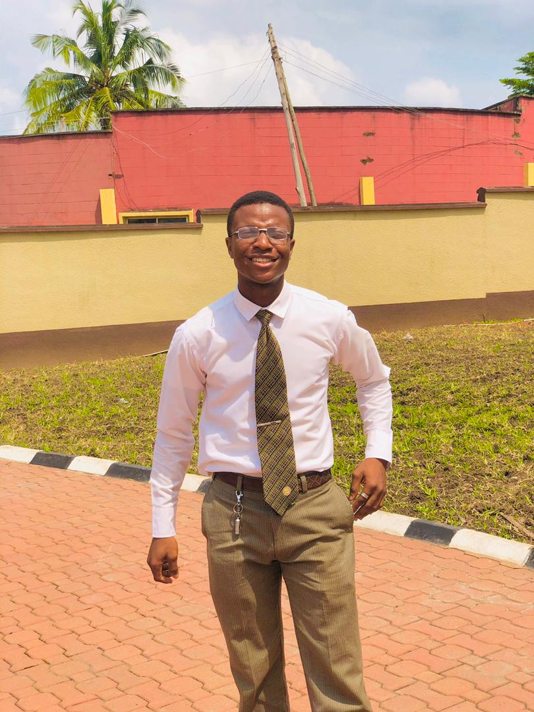

Emmanuel Monday Azagba Ajibola | WDD 130
I am a Technology Enthusiast with diverse experience in Front-End Web Development,
Python Programming, Social Media
Management, Data Entry and Graphic Design.
As a web developer I am proficient in HTML, CSS and Basic Python Programming and
have written various programs to
automate tasks and improve efficiency.
My experience as
a Data Entry Clerk has equipped me with the ability to perform Data Entry Tasks with minimal
experience
to also analyze data.
In addition, my Social Media Management skills has enabled me
to develop and create engaging contents (videos and
graphics) which helped boost the social media presence
of an organization.
Furthermore, my experience as a Graphic Designer has enabled me implement design strategies
in a company which brought
about an increase in sales by 50%.
My diverse skill set allows me to excel in different aspects
and contribute effectively to projects and teams.